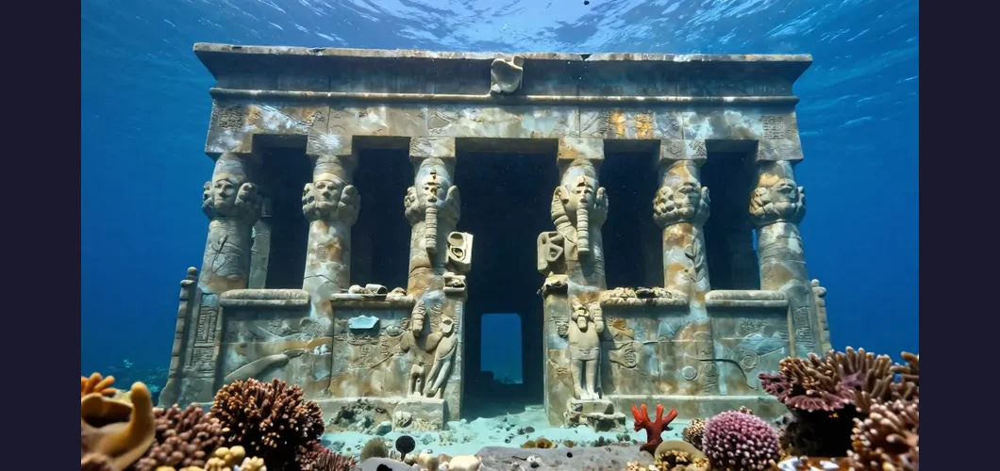

The Lost City of Heracleion: An Ancient Egyptian Metropolis Hidden Beneath the Sea for 1,200 Years

A city under 10 meters of sea
In 2000, a French underwater archaeologist named Franck Goddio made a great find. He worked with his team at the European Institute for Underwater Archaeology, together with the Egyptian antiquities authorities. Their discovery lay about 6.5 kilometers off the coast of Egypt, in Abu Qir Bay, near Alexandria. It lay under about 10 meters of Mediterranean water.
It was a whole ancient city. There were temples, harbors, statues, ships, and thousands of objects. The mud of the Nile delta had kept them for more than a thousand years.
For a long time, nobody believed that such a city could be found. Let us see why.
A city that lived only in old books
For more than a thousand years, the city was only a whisper in old books. It was a rich port at the mouth of the Nile. The Greek writer Herodotus mentioned it in the fifth century BCE. The geographer Strabo described it four centuries later. But nobody had found any ruins or traces.
The Egyptians called the city Thonis. The Greeks called it Heracleion. Some scholars began to wonder if it was only a legend, a story made up by ancient writers.
Then came the search that proved them wrong.
Four years of searching
The search began in 1996. Goddio and his team started a careful survey of Abu Qir Bay. They wanted to map about 11 by 15 kilometers of seabed. Goddio was already known for underwater digs in the Philippines.
The team used modern tools. Side-scan sonar uses sound to make pictures of the sea floor. Magnetometers sense metal and buried objects. Sub-bottom profilers look beneath the seabed. For four years the work was hard and often disappointing. Centuries of clay and sand covered the ruins.
The breakthrough came in 2000. The team began to dig in chosen places. First came pottery and building material. Then came parts of walls, and at last the huge stone blocks of a great temple.
But was this really the city from the old books?
Two names, one city
Among the finds was a huge red granite statue of Hapy, the Egyptian god of the Nile’s yearly flood. It stood about 5.4 meters tall, which is over 17 feet. It had lain unseen on the sea floor for more than a thousand years.
A stele helped to settle the question. A stele is an upright carved stone slab. Writing on stelae at the site showed that Thonis and Heracleion were two names for one city. One was a large, well-kept stele of the pharaoh Nectanebo I, who ruled from about 380 to 362 BCE.
So the city of the old books and the ruins under the sea were one and the same. What kind of city was it?
The Venice of Egypt
The city was probably founded around the 8th century BCE. It was not a small fishing village. It was a major port and a great market. Foreign ships often stopped there first. The city stood on a group of islands side by side in the Nile Delta. Canals and waterways cut through it, and it had many harbors and places to anchor. Its docks and temples sat beside the canals. Some experts compare it to Venice.
At its heart stood the great temple of Amun-Gereb, the city’s main holy place. For centuries the city thrived as a center of trade and worship. King Nectanebo I added many new parts to it in the fourth century BCE. Smaller shrines honored Osiris, Khonsu, and other gods. The Greeks called Khonsu Herakles, and that gave the city its Greek name.
Each year, a festival called the Mysteries of Osiris took place. A boat carried the god from the temple of Amun-Gereb to Canopus. Archaeologists found many small lead boats in the canals near the temple. They were probably gifts to the gods.
Greeks came here too. Greek writing and Athenian weights show that they traded in the port. It was a place where Egyptian and Greek peoples met. They traded goods, ideas, and religious customs.
Alexander the Great and Alexandria came later, and they changed the city’s fate.
How does a city sink?
Alexander the Great founded Alexandria in 331 BCE. Before that, Thonis-Heracleion was Egypt’s main port on the Mediterranean. Alexandria stood about 30 kilometers to the southwest. In the second century BCE, it took over as the main port.
The old city did not fall in one night. It sank slowly over several centuries. Natural disasters sank it. Earthquakes, huge waves called tsunamis, rising seas, and soil liquefaction all played a part. Liquefaction is when wet ground suddenly acts like a liquid.
Some studies point to around 101 BCE as a key moment. The ground under part of the city may have turned liquid. Buildings and monuments then fell into the water. The great temple itself was wrecked around 140 BCE. By the end of the eighth century CE, what was left had probably sunk for good.
Experts still study exactly how and when this happened. So the end of the city is partly an open question.
Statues, anchors, and shipwrecks
The digs have brought up many treasures. There are huge stone statues of pharaohs, queens, and gods. Some stand over 5 meters tall. They show the wealth of the city and the goods that came through its ports.
More than 700 stone anchors of many shapes have been found. They point to the many ships that came to Heracleion. There are also ancient shipwrecks in the harbor area. Reports give different numbers, from about 70 to 125, because the count grew as the digging went on. It is one of the largest groups of ancient ships ever found. Many carried amphorae, which are tall clay jars.
The sea floor held more than objects. It also held a setting for some old stories.
Helen, Paris, and a real harbor
Herodotus told a famous tale. Winds drove Paris and Helen of Troy to the Canopic mouth of the Nile. Paris’s servants fled to a nearby temple of Heracles. A man named Thonis, who guarded the river mouth, sent word to the king of Egypt.
These are legends, not history. But the discovery gave them a real setting. A major port at the Canopic mouth of the Nile, with a temple linked to Heracles, fits the old stories.
Today the dig still goes on. Only a small part of the site has been excavated. So we know that the city was real, and we know its names. We know that it was a busy port. We do not yet know everything about how it sank. And most of the city still waits under the water.
Think of Goddio’s team in Abu Qir Bay, 10 meters above those stones. A city that was lost for more than a thousand years is now telling its story. We are only beginning to listen.
References & Further Reading
Wikipedia: Franck Goddio — Goddio's background, Philippine digs, 2000 discovery, partners
Editorial note: Thonis-Heracleion was a real port city, and the sea took it. Experts still argue about exactly when and how it sank, and the Greek legends about it are stories, not proven history. See our Editorial Policy.